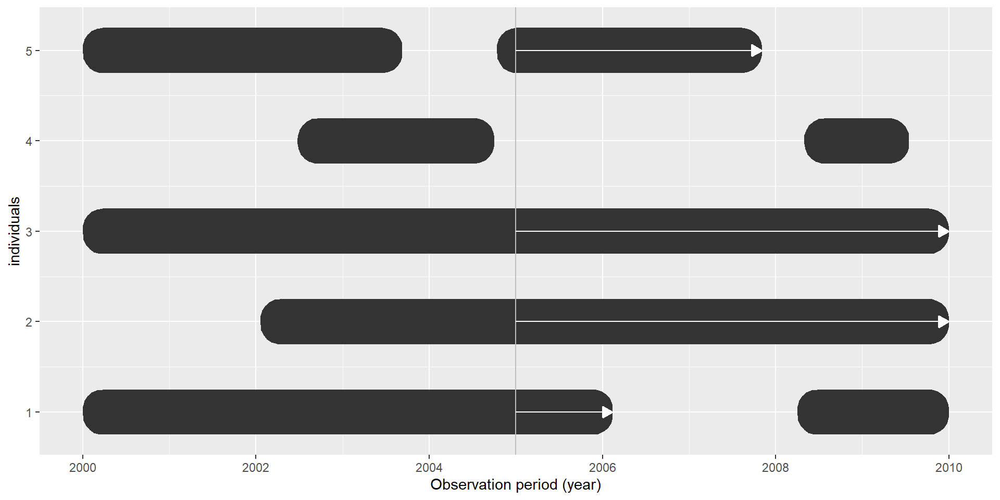
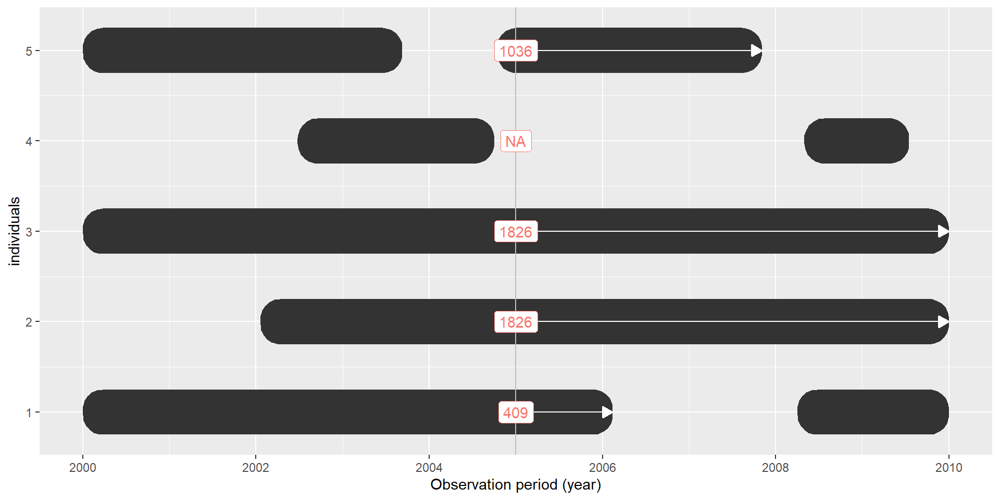
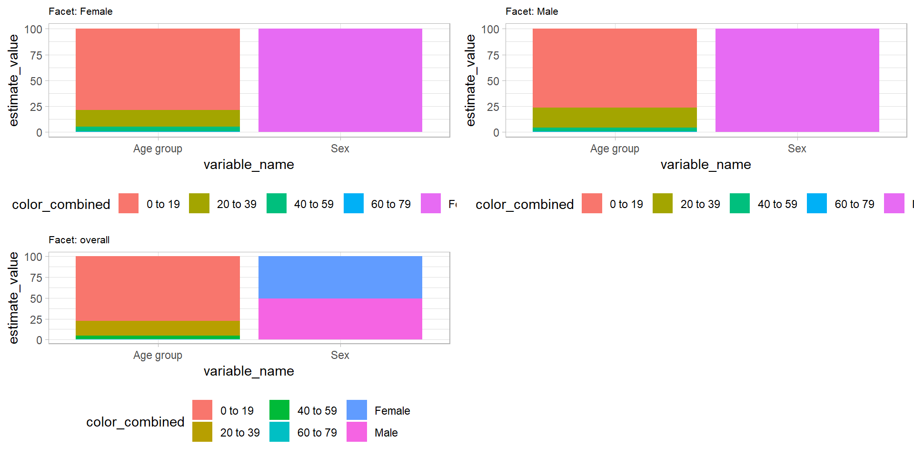
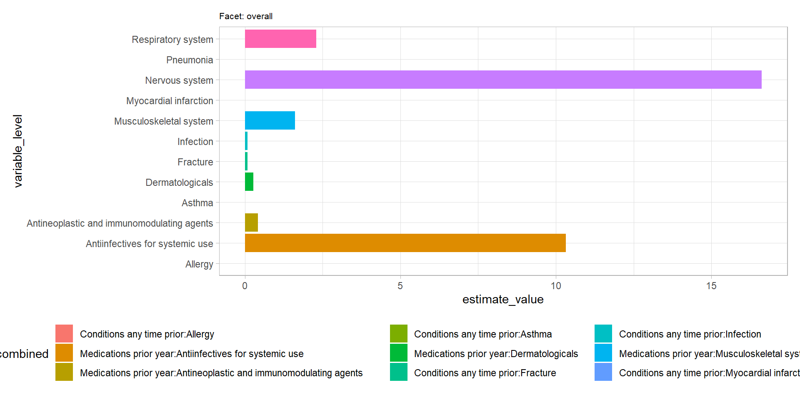
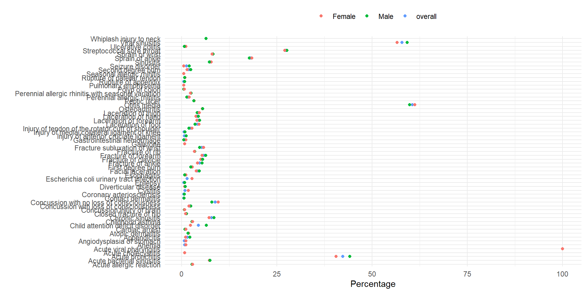
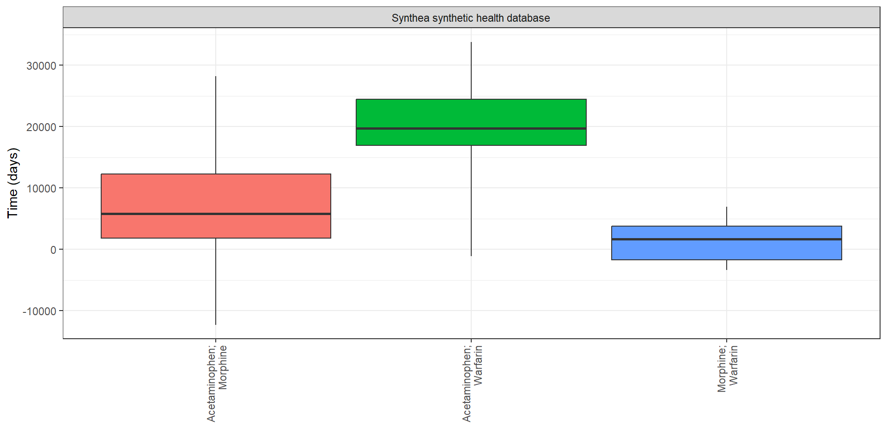
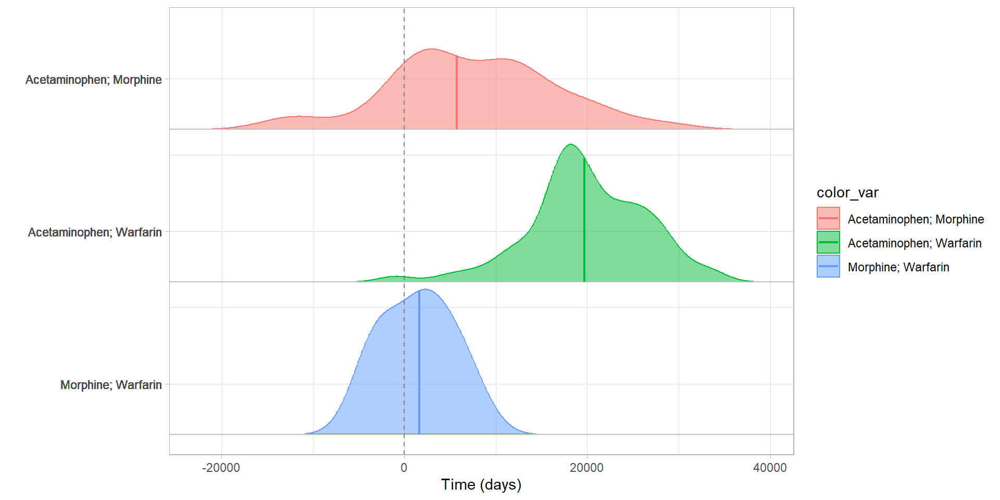
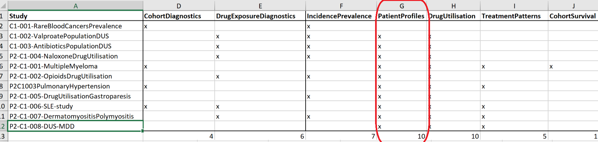

PatientProfiles tutorial
PatientProfiles
Scope
PatientProfiles (developer focus)
To add characteristics to tables.
To identify intersections with cohorts, concepts and omop tables.
Summarise data in
summarised_resultformat
CohortCharacteristics (user focus)
-
Summarise cohorts:
Charcateristics
Large scale characteristics
Cohort overlap
Cohort timing
Create visualisations (tables and figures).
Contents
addSex()
To create a new column with the sex of the individual. The original table must contain person_id or subject_id:
cdm$my_cohort |>
addSex(
sexName = "sex", # name of the new column (default = "sex")
missingSexValue = "None" # label for missing gender_concept_id (default = "None")
)# Source: table<og_002_1711590834> [?? x 5]
# Database: DuckDB v0.10.0 [martics@Windows 10 x64:R 4.2.3/C:\Users\martics\AppData\Local\Temp\Rtmpoj0zVO\file2cb4a682833.duckdb]
cohort_definition_id subject_id cohort_start_date cohort_end_date sex
<int> <int> <date> <date> <chr>
1 1 1169 1952-02-18 2018-08-27 Female
2 1 1318 1950-04-18 2019-01-02 Male
3 1 1729 2001-05-05 2018-03-04 Male
4 1 2097 1986-12-15 2019-03-16 Female
5 1 2184 2003-04-19 2019-05-30 Male
6 1 2406 1949-05-08 1993-09-30 Male
7 1 2437 1967-10-09 2018-07-31 Male
8 1 2566 1943-09-05 2019-04-09 Female
9 1 2591 1959-05-25 2018-12-06 Female
10 1 3823 1962-11-02 2016-11-23 Female
# ℹ more rowsaddAge()
To create a new column with the age of the individual. The original table must contain person_id or subject_id:
cdm$my_cohort |>
addAge(
indexDate = "cohort_start_date", # date to compute age (default = "cohort_start_date")
ageName = "age", # name of the age column (default = "age")
ageDefaultMonth = 1, # Month for individuals with missing month (default = 1)
ageDefaultDay = 1, # Day for individuals with missing day (default = 1)
ageImposeMonth = F, # Whether to impose default month to all individuals (default = F)
ageImposeDay = F # Whether to impose default day to all individuals (default = F)
)# Source: table<og_003_1711590835> [?? x 5]
# Database: DuckDB v0.10.0 [martics@Windows 10 x64:R 4.2.3/C:\Users\martics\AppData\Local\Temp\Rtmpoj0zVO\file2cb4a682833.duckdb]
cohort_definition_id subject_id cohort_start_date cohort_end_date age
<int> <int> <date> <date> <dbl>
1 1 1169 1952-02-18 2018-08-27 16
2 1 1318 1950-04-18 2019-01-02 12
3 1 1729 2001-05-05 2018-03-04 23
4 1 2097 1986-12-15 2019-03-16 9
5 1 2184 2003-04-19 2019-05-30 36
6 1 2406 1949-05-08 1993-09-30 6
7 1 2437 1967-10-09 2018-07-31 6
8 1 2566 1943-09-05 2019-04-09 3
9 1 2591 1959-05-25 2018-12-06 27
10 1 3823 1962-11-02 2016-11-23 8
# ℹ more rowsaddAge()
You can also add an age group:
Rows: ??
Columns: 25
Database: DuckDB v0.10.0 [martics@Windows 10 x64:R 4.2.3/C:\Users\martics\AppData\Local\Temp\Rtmpoj0zVO\file2cb4a682833.duckdb]
$ drug_exposure_id <int> 60926, 26418, 54785, 47027, 38712, 21897, 52764, 8667, 10459, 10524, 9646, 9653, 86272, 974…
$ person_id <int> 1332, 576, 4550, 3895, 3199, 476, 1154, 186, 871, 877, 806, 806, 1892, 817, 820, 1746, 2230…
$ drug_concept_id <int> 40213198, 40213260, 1118084, 40162522, 19059056, 40213296, 40213160, 40213160, 1127078, 112…
$ drug_exposure_start_date <date> 2010-10-06, 2017-10-25, 2000-11-13, 1982-03-30, 1975-08-19, 2008-05-31, 1971-05-16, 1976-0…
$ drug_exposure_start_datetime <dttm> 2010-10-06, 2017-10-25, 2000-11-13, 1982-03-30, 1975-08-19, 2008-05-31, 1971-05-16, 1976-0…
$ drug_exposure_end_date <date> 2010-10-06, 2017-10-25, 2000-11-13, 1982-03-30, 1975-09-02, 2008-05-31, 1971-05-16, 1976-0…
$ drug_exposure_end_datetime <dttm> 2010-10-06, 2017-10-25, 2000-11-13, 1982-03-30, 1975-09-02, 2008-05-31, 1971-05-16, 1976-0…
$ verbatim_end_date <date> 2010-10-06, 2017-10-25, NA, NA, 1975-09-02, 2008-05-31, 1971-05-16, 1976-05-31, 1968-01-08…
$ drug_type_concept_id <int> 581452, 581452, 38000177, 38000177, 38000177, 581452, 581452, 581452, 38000177, 38000177, 3…
$ stop_reason <chr> NA, NA, NA, NA, NA, NA, NA, NA, NA, NA, NA, NA, NA, NA, NA, NA, NA, NA, NA, NA, NA, NA, NA,…
$ refills <int> 0, 0, 0, 0, 0, 0, 0, 0, 0, 0, 0, 0, 0, 0, 0, 0, 0, 0, 0, 0, 0, 0, 0, 0, 0, 0, 0, 0, 0, 0, 0…
$ quantity <dbl> 0, 0, 0, 0, 0, 0, 0, 0, 0, 0, 0, 0, 0, 0, 0, 0, 0, 0, 0, 0, 0, 0, 0, 0, 0, 0, 0, 0, 0, 0, 0…
$ days_supply <int> 0, 0, 0, 0, 14, 0, 0, 0, 60, 14, 28, 7, 0, 14, 11, 7, 0, 0, 14, 0, 0, 91, 21, 0, 0, 360, 7,…
$ sig <chr> NA, NA, NA, NA, NA, NA, NA, NA, NA, NA, NA, NA, NA, NA, NA, NA, NA, NA, NA, NA, NA, NA, NA,…
$ route_concept_id <int> 0, 0, 0, 0, 0, 0, 0, 0, 0, 0, 0, 0, 0, 0, 0, 0, 0, 0, 0, 0, 0, 0, 0, 0, 0, 0, 0, 0, 0, 0, 0…
$ lot_number <chr> "0", "0", "0", "0", "0", "0", "0", "0", "0", "0", "0", "0", "0", "0", "0", "0", "0", "0", "…
$ provider_id <int> NA, NA, NA, NA, NA, NA, NA, NA, NA, NA, NA, NA, NA, NA, NA, NA, NA, NA, NA, NA, NA, NA, NA,…
$ visit_occurrence_id <int> 88400, 38145, 303185, 259023, 212733, 31764, 76224, 12657, 57955, 58440, 53468, 53505, 1260…
$ visit_detail_id <int> 0, 0, 0, 0, 0, 0, 0, 0, 0, 0, 0, 0, 0, 0, 0, 0, 0, 0, 0, 0, 0, 0, 0, 0, 0, 0, 0, 0, 0, 0, 0…
$ drug_source_value <chr> "133", "121", "00025152531", "857005", "243670", "52", "10", "10", "282464", "313782", "282…
$ drug_source_concept_id <int> 40213198, 40213260, 44923712, 40162522, 19059056, 40213296, 40213160, 40213160, 1127078, 11…
$ route_source_value <chr> NA, NA, NA, NA, NA, NA, NA, NA, NA, NA, NA, NA, NA, NA, NA, NA, NA, NA, NA, NA, NA, NA, NA,…
$ dose_unit_source_value <chr> NA, NA, NA, NA, NA, NA, NA, NA, NA, NA, NA, NA, NA, NA, NA, NA, NA, NA, NA, NA, NA, NA, NA,…
$ age <dbl> 67, 51, 38, 58, 2, 40, 0, 4, 1, 15, 5, 52, 23, 41, 28, 58, 12, 61, 57, 34, 60, 39, 2, 36, 7…
$ age_group <chr> "40 or above", "40 or above", "0 to 39", "40 or above", "0 to 39", "40 or above", "0 to 39"…addAge()
You can personalise labels:
# Source: table<og_008_1711590837> [?? x 7]
# Database: DuckDB v0.10.0 [martics@Windows 10 x64:R 4.2.3/C:\Users\martics\AppData\Local\Temp\Rtmpoj0zVO\file2cb4a682833.duckdb]
cohort_definition_id subject_id cohort_start_date cohort_end_date age age_group category
<int> <int> <date> <date> <dbl> <chr> <chr>
1 1 1169 1952-02-18 2018-08-27 16 <40 kids
2 1 1318 1950-04-18 2019-01-02 12 <40 kids
3 1 1729 2001-05-05 2018-03-04 23 <40 adults
4 1 2097 1986-12-15 2019-03-16 9 <40 kids
5 1 2184 2003-04-19 2019-05-30 36 <40 adults
6 1 2406 1949-05-08 1993-09-30 6 <40 kids
7 1 2437 1967-10-09 2018-07-31 6 <40 kids
8 1 2566 1943-09-05 2019-04-09 3 <40 kids
9 1 2591 1959-05-25 2018-12-06 27 <40 adults
10 1 3823 1962-11-02 2016-11-23 8 <40 kids
# ℹ more rowsaddPriorObservation()
addPriorObservation()

addPriorObservation()
addPriorObservation()

addPriorObservation()
cdm$my_cohort |>
addPriorObservation()# Source: table<og_009_1711590838> [?? x 5]
# Database: DuckDB v0.10.0 [martics@Windows 10 x64:R 4.2.3/C:\Users\martics\AppData\Local\Temp\Rtmpoj0zVO\file2cb4a682833.duckdb]
cohort_definition_id subject_id cohort_start_date cohort_end_date prior_observation
<int> <int> <date> <date> <dbl>
1 1 1169 1952-02-18 2018-08-27 5971
2 1 1318 1950-04-18 2019-01-02 4423
3 1 2097 1986-12-15 2019-03-16 3572
4 1 2184 2003-04-19 2019-05-30 13212
5 1 2406 1949-05-08 1993-09-30 2341
6 1 2437 1967-10-09 2018-07-31 2253
7 1 2566 1943-09-05 2019-04-09 1412
8 1 3823 1962-11-02 2016-11-23 2942
9 1 3917 1971-04-20 2018-09-14 1320
10 1 4197 2016-03-10 2016-11-27 11134
# ℹ more rowsaddPriorObservation()
cdm$condition_occurrence |>
addPriorObservation(
indexDate = "condition_start_date",
priorObservationName = "start_observation", # name of the column
priorObservationType = "date" # default = "days"
) |>
glimpse()# Source: SQL [?? x 13]
# Database: DuckDB v0.10.0 [martics@Windows 10 x64:R 4.2.3/C:\Users\martics\AppData\Local\Temp\Rtmpoj0zVO\file2cb4a682833.duckdb]
person_id condition_occurrence_id condition_concept_id condition_start_date condition_start_datetime condition_end_date
<int> <int> <int> <date> <dttm> <date>
1 263 4483 4112343 2015-10-02 2015-10-02 00:00:00 2015-10-14
2 273 4657 192671 2011-10-10 2011-10-10 00:00:00 NA
3 283 4815 28060 1984-02-15 1984-02-15 00:00:00 1984-02-25
4 293 4981 378001 2005-11-07 2005-11-07 00:00:00 2005-12-07
5 304 5153 257012 1974-07-30 1974-07-30 00:00:00 1974-11-05
6 334 5655 40481087 1999-07-12 1999-07-12 00:00:00 1999-07-19
7 341 5811 40481087 1990-09-14 1990-09-14 00:00:00 1990-10-05
8 351 5977 40481087 1986-02-24 1986-02-24 00:00:00 1986-03-17
9 362 6143 4113008 1998-07-03 1998-07-03 00:00:00 1998-07-17
10 370 6309 372328 1970-03-15 1970-03-15 00:00:00 1970-04-23
# ℹ more rows
# ℹ 7 more variables: condition_end_datetime <dttm>, condition_type_concept_id <int>, condition_status_concept_id <int>,
# condition_source_value <chr>, condition_source_concept_id <int>, condition_status_source_value <chr>,
# start_observation <date>addFutureObservation()
addFutureObservation()

addFutureObservation()
addFutureObservation()
addFutureObservation()
cdm$my_cohort |>
addFutureObservation()# Source: table<og_011_1711590839> [?? x 5]
# Database: DuckDB v0.10.0 [martics@Windows 10 x64:R 4.2.3/C:\Users\martics\AppData\Local\Temp\Rtmpoj0zVO\file2cb4a682833.duckdb]
cohort_definition_id subject_id cohort_start_date cohort_end_date future_observation
<int> <int> <date> <date> <dbl>
1 1 1169 1952-02-18 2018-08-27 24297
2 1 1318 1950-04-18 2019-01-02 25096
3 1 2097 1986-12-15 2019-03-16 11779
4 1 2184 2003-04-19 2019-05-30 5885
5 1 2406 1949-05-08 1993-09-30 16216
6 1 2437 1967-10-09 2018-07-31 18558
7 1 2566 1943-09-05 2019-04-09 27610
8 1 3823 1962-11-02 2016-11-23 19745
9 1 3917 1971-04-20 2018-09-14 17314
10 1 4197 2016-03-10 2016-11-27 262
# ℹ more rowsaddInObservation()
addInObservation()

addInObservation()
addInObservation()

addInObservation()
cdm$condition_occurrence |>
addInObservation(indexDate = "condition_start_date") |>
filter(in_observation == 0) |>
select("condition_concept_id", "person_id", "condition_start_date", "in_observation")# Source: SQL [?? x 4]
# Database: DuckDB v0.10.0 [martics@Windows 10 x64:R 4.2.3/C:\Users\martics\AppData\Local\Temp\Rtmpoj0zVO\file2cb4a682833.duckdb]
condition_concept_id person_id condition_start_date in_observation
<int> <int> <date> <dbl>
1 4029498 539 1933-03-26 0
2 80180 156 2019-01-30 0
3 4029498 211 1967-10-12 0
4 80180 588 2019-06-08 0
5 80180 339 2019-06-21 0
6 80180 220 2019-05-15 0
7 80180 843 2017-09-04 0
8 80180 884 2017-09-16 0
9 80180 1100 2019-05-08 0
10 80180 814 2019-05-24 0
# ℹ more rowsaddInObservation() window
# Source: table<og_015_1711590841> [?? x 7]
# Database: DuckDB v0.10.0 [martics@Windows 10 x64:R 4.2.3/C:\Users\martics\AppData\Local\Temp\Rtmpoj0zVO\file2cb4a682833.duckdb]
cohort_definition_id subject_id cohort_start_date cohort_end_date obs_20yr obs_40yr obs_60yr
<int> <int> <date> <date> <dbl> <dbl> <dbl>
1 1 1169 1952-02-18 2018-08-27 1 1 1
2 1 1318 1950-04-18 2019-01-02 1 1 1
3 1 2097 1986-12-15 2019-03-16 1 0 0
4 1 2184 2003-04-19 2019-05-30 0 0 0
5 1 2406 1949-05-08 1993-09-30 1 1 0
6 1 2437 1967-10-09 2018-07-31 1 1 0
7 1 2566 1943-09-05 2019-04-09 1 1 1
8 1 3823 1962-11-02 2016-11-23 1 1 0
9 1 3917 1971-04-20 2018-09-14 1 1 0
10 1 4197 2016-03-10 2016-11-27 0 0 0
# ℹ more rowsaddDateOfBirth()
cdm$my_cohort |>
addDateOfBirth()# Source: SQL [?? x 5]
# Database: DuckDB v0.10.0 [martics@Windows 10 x64:R 4.2.3/C:\Users\martics\AppData\Local\Temp\Rtmpoj0zVO\file2cb4a682833.duckdb]
cohort_definition_id subject_id cohort_start_date cohort_end_date date_of_birth
<int> <int> <date> <date> <date>
1 1 1169 1952-02-18 2018-08-27 1935-10-14
2 1 1318 1950-04-18 2019-01-02 1938-03-08
3 1 1729 2001-05-05 2018-03-04 1977-09-07
4 1 2097 1986-12-15 2019-03-16 1977-03-05
5 1 2184 2003-04-19 2019-05-30 1967-02-15
6 1 2406 1949-05-08 1993-09-30 1942-12-10
7 1 2437 1967-10-09 2018-07-31 1961-08-07
8 1 2566 1943-09-05 2019-04-09 1939-10-24
9 1 2591 1959-05-25 2018-12-06 1931-06-17
10 1 3823 1962-11-02 2016-11-23 1954-10-13
# ℹ more rowsaddDemographics()
cdm$my_cohort |>
addDemographics()# Source: table<og_016_1711590842> [?? x 8]
# Database: DuckDB v0.10.0 [martics@Windows 10 x64:R 4.2.3/C:\Users\martics\AppData\Local\Temp\Rtmpoj0zVO\file2cb4a682833.duckdb]
cohort_definition_id subject_id cohort_start_date cohort_end_date age sex prior_observation future_observation
<int> <int> <date> <date> <dbl> <chr> <dbl> <dbl>
1 1 1169 1952-02-18 2018-08-27 16 Female 5971 24297
2 1 1318 1950-04-18 2019-01-02 12 Male 4423 25096
3 1 2097 1986-12-15 2019-03-16 9 Female 3572 11779
4 1 2184 2003-04-19 2019-05-30 36 Male 13212 5885
5 1 2406 1949-05-08 1993-09-30 6 Male 2341 16216
6 1 2437 1967-10-09 2018-07-31 6 Male 2253 18558
7 1 2566 1943-09-05 2019-04-09 3 Female 1412 27610
8 1 3823 1962-11-02 2016-11-23 8 Female 2942 19745
9 1 3917 1971-04-20 2018-09-14 3 Male 1320 17314
10 1 4197 2016-03-10 2016-11-27 30 Female 11134 262
# ℹ more rowsaddDemographics()
cdm$my_cohort |>
addDemographics(
age = TRUE,
ageGroup = list("kids" = c(0, 17), "adults" = c(18, Inf)),
sex = FALSE,
priorObservation = TRUE,
priorObservationName = "observation_start",
priorObservationType = "date",
futureObservation = TRUE,
futureObservationName = "observation_end",
futureObservationType = "date"
)# Source: table<og_018_1711590843> [?? x 8]
# Database: DuckDB v0.10.0 [martics@Windows 10 x64:R 4.2.3/C:\Users\martics\AppData\Local\Temp\Rtmpoj0zVO\file2cb4a682833.duckdb]
cohort_definition_id subject_id cohort_start_date cohort_end_date age observation_start observation_end age_group
<int> <int> <date> <date> <dbl> <date> <date> <chr>
1 1 1169 1952-02-18 2018-08-27 16 1935-10-14 2018-08-27 kid
2 1 1318 1950-04-18 2019-01-02 12 1938-03-09 2019-01-02 kid
3 1 2097 1986-12-15 2019-03-16 9 1977-03-05 2019-03-16 kid
4 1 2184 2003-04-19 2019-05-30 36 1967-02-15 2019-05-30 adult
5 1 2406 1949-05-08 1993-09-30 6 1942-12-10 1993-09-30 kid
6 1 2437 1967-10-09 2018-07-31 6 1961-08-08 2018-07-31 kid
7 1 2566 1943-09-05 2019-04-09 3 1939-10-24 2019-04-09 kid
8 1 3823 1962-11-02 2016-11-23 8 1954-10-13 2016-11-23 kid
9 1 3917 1971-04-20 2018-09-14 3 1967-09-08 2018-09-14 kid
10 1 4197 2016-03-10 2016-11-27 30 1985-09-15 2016-11-27 adult
# ℹ more rowsadd intersections overview
origin table
indexDateColumn that indicates the “origin” date.windowWindow list to specify the interest interval from theindexDate.censorDateColumn that indicates the “end” of followup.
add intersections overview
target
Cohort:
targetCohortTable+targetCohortId+ (targetStartDate)Concept:
conceptSet+ (targetStartDate)Table:
tableName+ (targetStartDate)
add intersections overview
Estimate
flag: NA, 0, 1 (extra argument:targetEndDate)count: NA/integer (extra argument:targetEndDate)date: NA/date (extra argument:order)days: NA/integer (extra argument:order)
12 functions
addCohortIntersectFlag
# Source: table<og_034_1711590847> [?? x 8]
# Database: DuckDB v0.10.0 [martics@Windows 10 x64:R 4.2.3/C:\Users\martics\AppData\Local\Temp\Rtmpoj0zVO\file2cb4a682833.duckdb]
cohort_definition_id subject_id cohort_start_date cohort_end_date aspirin_1_to_180 amoxicillin_1_to_180 aspirin_181_to_365
<int> <int> <date> <date> <dbl> <dbl> <dbl>
1 1 4861 1947-06-02 2019-05-23 0 0 1
2 1 4380 1986-04-28 2019-05-20 0 0 0
3 1 3647 1943-06-30 2018-07-05 0 1 0
4 1 4005 1978-12-04 2019-06-29 0 1 0
5 1 105 1979-03-03 2005-11-18 0 1 0
6 1 4432 1959-03-21 2019-05-14 0 0 0
7 1 4763 1950-10-22 2018-06-26 0 0 1
8 1 1123 1971-05-29 2019-06-20 1 0 0
9 1 3851 1912-10-26 2000-09-25 0 0 1
10 1 5255 1971-07-27 2018-06-28 1 0 0
# ℹ more rows
# ℹ 1 more variable: amoxicillin_181_to_365 <dbl>addTableIntersectCount
cdm$my_cohort |>
addTableIntersectCount(
tableName = "drug_exposure",
window = c(0, 365),
targetEndDate = NULL,
nameStyle = "number_prescriptions"
)# Source: table<og_043_1711590849> [?? x 5]
# Database: DuckDB v0.10.0 [martics@Windows 10 x64:R 4.2.3/C:\Users\martics\AppData\Local\Temp\Rtmpoj0zVO\file2cb4a682833.duckdb]
cohort_definition_id subject_id cohort_start_date cohort_end_date number_prescriptions
<int> <int> <date> <date> <dbl>
1 1 2097 1986-12-15 2019-03-16 1
2 1 2184 2003-04-19 2019-05-30 3
3 1 2437 1967-10-09 2018-07-31 1
4 1 2566 1943-09-05 2019-04-09 1
5 1 4197 2016-03-10 2016-11-27 1
6 1 4235 1979-11-30 2019-05-30 1
7 1 4649 1990-08-23 2019-06-03 2
8 1 395 1971-10-20 2019-04-09 1
9 1 455 1950-12-29 2019-06-13 2
10 1 742 1926-01-12 2014-10-28 2
# ℹ more rowsaddCohortIntersectDate
cdm$my_cohort |>
addCohortIntersectDate(
targetCohortTable = "outcome",
window = c(0, Inf),
censor = "cohort_end_date",
nameStyle = "next_{cohort_name}"
)# Source: table<og_050_1711590851> [?? x 6]
# Database: DuckDB v0.10.0 [martics@Windows 10 x64:R 4.2.3/C:\Users\martics\AppData\Local\Temp\Rtmpoj0zVO\file2cb4a682833.duckdb]
cohort_definition_id subject_id cohort_start_date cohort_end_date next_covid next_vaccine
<int> <int> <date> <date> <date> <date>
1 1 1169 1952-02-18 2018-08-27 1956-09-15 1971-05-18
2 1 1318 1950-04-18 2019-01-02 1954-09-26 1972-07-10
3 1 2097 1986-12-15 2019-03-16 2009-11-20 NA
4 1 2184 2003-04-19 2019-05-30 2004-03-21 NA
5 1 2437 1967-10-09 2018-07-31 1972-11-04 NA
6 1 2566 1943-09-05 2019-04-09 1959-05-02 1958-11-13
7 1 3917 1971-04-20 2018-09-14 1980-12-26 NA
8 1 4235 1979-11-30 2019-05-30 2008-02-09 NA
9 1 4504 1981-07-07 2019-06-22 1995-07-06 NA
10 1 4964 1966-09-12 2018-12-01 2003-08-27 NA
# ℹ more rowsaddConceptIntersectDays
cdm$my_cohort |>
addConceptIntersectDays(
conceptSet = getDrugIngredientCodes(cdm = cdm),
window = c(0, 365),
nameStyle = "next_{concept_name}"
) |>
glimpse()Rows: ??
Columns: 95
Database: DuckDB v0.10.0 [martics@Windows 10 x64:R 4.2.3/C:\Users\martics\AppData\Local\Temp\Rtmpoj0zVO\file2cb4a682833.duckdb]
$ cohort_definition_id <int> 1, 1, 1, 1, 1, 1, 1, 1, 1, 1, 1, 1, 1, 1, 1, 1, 1, 1, 1, 1, 1, 1, 1, 1, 1, 1, 1, 1, 1, 1, 1, 1,…
$ subject_id <int> 2097, 2184, 2437, 2566, 4649, 117, 395, 455, 742, 1250, 2337, 2594, 4861, 4987, 5316, 262, 821,…
$ cohort_start_date <date> 1986-12-15, 2003-04-19, 1967-10-09, 1943-09-05, 1990-08-23, 1969-10-03, 1971-10-20, 1950-12-29…
$ cohort_end_date <date> 2019-03-16, 2019-05-30, 2018-07-31, 2019-04-09, 2019-06-03, 2018-10-06, 2019-04-09, 2019-06-13…
$ next_naproxen <dbl> NA, NA, NA, NA, NA, NA, NA, NA, NA, NA, NA, NA, NA, NA, NA, NA, NA, NA, NA, NA, NA, NA, NA, NA,…
$ next_amoxicillin <dbl> NA, 337, NA, NA, NA, 185, NA, NA, NA, NA, NA, NA, NA, NA, NA, NA, NA, NA, NA, NA, NA, NA, NA, N…
$ next_norgestimate <dbl> NA, NA, NA, NA, 126, NA, NA, NA, NA, NA, NA, NA, NA, NA, NA, NA, NA, NA, NA, NA, NA, NA, NA, NA…
$ next_celecoxib <dbl> NA, NA, NA, NA, NA, NA, NA, NA, NA, NA, NA, NA, NA, NA, NA, NA, NA, NA, NA, NA, NA, NA, NA, NA,…
$ next_epinephrine <dbl> NA, NA, NA, NA, NA, NA, NA, NA, NA, NA, NA, NA, NA, NA, NA, NA, NA, NA, NA, NA, NA, NA, NA, NA,…
$ next_doxycycline <dbl> NA, NA, NA, NA, NA, NA, NA, NA, NA, NA, NA, NA, NA, NA, NA, NA, NA, NA, NA, NA, NA, NA, NA, NA,…
$ next_meperidine <dbl> NA, 337, NA, NA, NA, NA, NA, NA, NA, NA, NA, NA, NA, NA, NA, NA, NA, NA, NA, NA, NA, NA, NA, NA…
$ next_clavulanate <dbl> NA, NA, NA, NA, NA, 185, NA, NA, NA, NA, NA, NA, NA, NA, NA, NA, NA, NA, NA, NA, NA, NA, NA, NA…
$ next_mestranol <dbl> NA, NA, NA, NA, NA, NA, NA, NA, NA, NA, NA, NA, NA, NA, NA, NA, NA, NA, NA, NA, NA, NA, NA, NA,…
$ next_doxylamine <dbl> NA, NA, NA, NA, NA, NA, NA, NA, 149, NA, NA, NA, NA, NA, NA, NA, NA, NA, NA, NA, NA, NA, NA, NA…
$ next_cefuroxime <dbl> NA, NA, NA, NA, NA, NA, NA, NA, NA, NA, NA, NA, NA, NA, NA, NA, NA, NA, NA, NA, NA, NA, NA, NA,…
$ next_prednisone <dbl> NA, NA, NA, NA, NA, NA, NA, NA, NA, NA, NA, NA, NA, NA, NA, NA, NA, NA, NA, 331, NA, NA, NA, NA…
$ next_simvastatin <dbl> NA, NA, NA, NA, NA, NA, NA, NA, NA, NA, NA, NA, NA, NA, NA, NA, NA, NA, NA, NA, NA, NA, NA, NA,…
$ next_chlorpheniramine <dbl> NA, NA, NA, NA, NA, NA, NA, NA, NA, NA, NA, NA, NA, NA, NA, NA, NA, NA, NA, NA, NA, NA, NA, NA,…
$ next_atorvastatin <dbl> NA, NA, NA, NA, NA, NA, NA, NA, NA, NA, NA, NA, NA, NA, NA, NA, NA, NA, NA, NA, NA, NA, NA, NA,…
$ next_dextromethorphan <dbl> NA, NA, NA, NA, NA, NA, NA, NA, 149, NA, NA, NA, NA, NA, NA, NA, NA, NA, NA, NA, NA, NA, NA, NA…
$ next_diazepam <dbl> NA, NA, NA, NA, NA, NA, NA, NA, NA, NA, NA, NA, NA, NA, NA, NA, NA, NA, NA, NA, NA, NA, NA, NA,…
$ next_salmeterol <dbl> NA, NA, NA, NA, NA, NA, NA, NA, NA, NA, NA, NA, NA, NA, NA, NA, NA, NA, NA, NA, NA, NA, NA, NA,…
$ next_ibuprofen <dbl> NA, 337, NA, NA, NA, NA, NA, NA, NA, NA, NA, 346, NA, NA, NA, NA, NA, NA, NA, NA, NA, NA, NA, N…
$ next_ethinyl_estradiol <dbl> NA, NA, NA, NA, 126, NA, NA, NA, NA, NA, NA, NA, NA, NA, NA, NA, NA, NA, NA, NA, NA, NA, NA, NA…
$ next_hydrocortisone <dbl> NA, NA, NA, NA, NA, NA, NA, NA, NA, NA, NA, NA, NA, NA, NA, NA, NA, NA, NA, NA, NA, NA, NA, NA,…
$ next_phenazopyridine <dbl> NA, NA, NA, NA, NA, NA, NA, NA, NA, NA, NA, NA, NA, NA, NA, NA, NA, NA, NA, NA, NA, NA, NA, NA,…
$ next_penicillin_g <dbl> NA, NA, NA, NA, NA, NA, NA, NA, NA, NA, NA, NA, 326, NA, NA, NA, NA, NA, NA, NA, NA, NA, NA, NA…
$ next_oxycodone <dbl> NA, NA, NA, NA, NA, NA, NA, NA, NA, NA, NA, NA, NA, NA, NA, NA, NA, NA, NA, NA, NA, NA, NA, NA,…
$ next_nitrofurantoin <dbl> NA, NA, NA, NA, NA, NA, NA, NA, NA, NA, NA, NA, NA, NA, NA, NA, NA, NA, NA, NA, NA, NA, NA, NA,…
$ next_ferrous_fumarate <dbl> NA, NA, NA, NA, NA, NA, NA, NA, NA, NA, NA, NA, NA, NA, NA, NA, NA, NA, NA, NA, NA, NA, NA, NA,…
$ next_acetaminophen <dbl> NA, NA, NA, NA, NA, NA, NA, 150, 149, NA, 348, NA, NA, NA, 245, 178, NA, NA, NA, NA, 238, 325, …
$ next_penicillin_v <dbl> 0, NA, 0, 0, NA, NA, NA, NA, 310, NA, NA, NA, NA, 225, NA, NA, 0, 0, 0, NA, NA, NA, NA, 0, 0, N…
$ next_aspirin <dbl> NA, NA, NA, NA, NA, NA, NA, NA, NA, 149, NA, NA, 326, NA, NA, NA, NA, NA, NA, NA, NA, 318, NA, …
$ next_norethindrone <dbl> NA, NA, NA, NA, NA, NA, NA, NA, NA, NA, NA, NA, NA, NA, NA, NA, NA, NA, NA, NA, NA, NA, NA, NA,…
$ next_inert_ingredients <dbl> NA, NA, NA, NA, 126, NA, NA, NA, NA, NA, NA, NA, NA, NA, NA, NA, NA, NA, NA, NA, NA, NA, NA, NA…
$ next_diphenhydramine <dbl> NA, NA, NA, NA, NA, NA, NA, NA, NA, NA, NA, NA, NA, NA, NA, NA, NA, NA, NA, NA, NA, NA, NA, NA,…
$ next_hydrocodone <dbl> NA, NA, NA, NA, NA, NA, NA, NA, NA, NA, NA, NA, NA, NA, NA, NA, NA, NA, NA, NA, NA, 325, NA, NA…
$ next_amlodipine <dbl> NA, NA, NA, NA, NA, NA, NA, NA, NA, NA, NA, NA, NA, NA, NA, NA, NA, NA, NA, NA, NA, NA, NA, NA,…
$ next_nitroglycerin <dbl> NA, NA, NA, NA, NA, NA, NA, NA, NA, NA, NA, NA, NA, NA, NA, NA, NA, NA, NA, NA, NA, NA, NA, NA,…
$ next_atropine <dbl> NA, NA, NA, NA, NA, NA, NA, NA, NA, NA, NA, NA, NA, NA, NA, NA, NA, NA, NA, NA, NA, NA, NA, NA,…
$ next_diclofenac <dbl> NA, NA, NA, NA, NA, NA, NA, NA, NA, NA, NA, NA, NA, NA, NA, NA, NA, NA, NA, NA, NA, NA, NA, NA,…
$ next_ampicillin <dbl> NA, NA, NA, NA, NA, NA, NA, NA, NA, NA, NA, NA, NA, NA, NA, NA, NA, NA, NA, NA, 238, NA, NA, NA…
$ next_astemizole <dbl> NA, NA, NA, NA, NA, NA, NA, NA, NA, NA, NA, NA, NA, NA, NA, NA, NA, NA, NA, NA, NA, NA, NA, NA,…
$ next_carbamazepine <dbl> NA, NA, NA, NA, NA, NA, 116, NA, NA, NA, NA, NA, NA, NA, NA, NA, NA, NA, NA, NA, NA, NA, NA, NA…
$ next_albuterol <dbl> NA, NA, NA, NA, NA, NA, NA, NA, NA, NA, NA, NA, NA, NA, NA, NA, NA, NA, NA, NA, NA, NA, NA, NA,…
$ next_fluticasone <dbl> NA, NA, NA, NA, NA, NA, NA, NA, NA, NA, NA, NA, NA, NA, NA, NA, NA, NA, NA, NA, NA, NA, NA, NA,…
$ next_cefaclor <dbl> NA, NA, NA, NA, NA, NA, NA, NA, NA, NA, NA, NA, NA, NA, NA, NA, NA, NA, NA, NA, NA, NA, NA, NA,…
$ next_clopidogrel <dbl> NA, NA, NA, NA, NA, NA, NA, NA, NA, NA, NA, NA, NA, NA, NA, NA, NA, NA, NA, NA, NA, NA, NA, NA,…
$ next_methylphenidate <dbl> NA, NA, NA, NA, NA, NA, NA, NA, NA, NA, NA, NA, NA, NA, NA, NA, NA, NA, NA, NA, NA, NA, NA, NA,…
$ next_ondansetron <dbl> NA, NA, NA, NA, NA, NA, NA, NA, NA, NA, NA, NA, NA, NA, NA, NA, NA, NA, NA, NA, NA, NA, NA, NA,…
$ next_loratadine <dbl> NA, NA, NA, NA, NA, NA, NA, NA, NA, NA, NA, NA, NA, NA, NA, NA, NA, NA, NA, NA, NA, NA, NA, NA,…
$ next_morphine <dbl> NA, NA, NA, NA, NA, NA, NA, NA, NA, NA, NA, NA, NA, NA, NA, NA, NA, NA, NA, NA, NA, NA, NA, NA,…
$ next_dornase_alfa <dbl> NA, NA, NA, NA, NA, NA, NA, NA, NA, NA, NA, NA, NA, NA, NA, NA, NA, NA, NA, NA, NA, NA, NA, NA,…
$ next_cetirizine <dbl> NA, NA, NA, NA, NA, NA, NA, NA, NA, NA, NA, NA, NA, NA, NA, NA, NA, NA, NA, NA, NA, NA, NA, NA,…
$ next_terfenadine <dbl> NA, NA, NA, NA, NA, NA, NA, NA, NA, NA, NA, NA, NA, NA, NA, NA, NA, NA, NA, NA, NA, NA, NA, NA,…
$ next_fexofenadine <dbl> NA, NA, NA, NA, NA, NA, NA, NA, NA, NA, NA, NA, NA, NA, NA, NA, NA, NA, NA, NA, NA, NA, NA, NA,…
$ next_fentanyl <dbl> NA, NA, NA, NA, NA, NA, NA, NA, NA, NA, NA, NA, NA, NA, NA, NA, NA, NA, NA, NA, NA, NA, NA, NA,…
$ next_methotrexate <dbl> NA, NA, NA, NA, NA, NA, NA, NA, NA, NA, NA, NA, NA, NA, NA, NA, NA, NA, NA, NA, NA, NA, NA, NA,…
$ next_verapamil <dbl> NA, NA, NA, NA, NA, NA, NA, NA, NA, NA, NA, NA, NA, NA, NA, NA, NA, NA, NA, NA, NA, NA, NA, NA,…
$ next_vitamin_b_12 <dbl> NA, NA, NA, NA, NA, NA, NA, NA, NA, NA, NA, NA, NA, NA, NA, NA, NA, NA, NA, NA, NA, NA, NA, NA,…
$ next_amiodarone <dbl> NA, NA, NA, NA, NA, NA, NA, NA, NA, NA, NA, NA, NA, NA, NA, NA, NA, NA, NA, NA, NA, NA, NA, NA,…
$ next_warfarin <dbl> NA, NA, NA, NA, NA, NA, NA, NA, NA, NA, NA, NA, NA, NA, NA, NA, NA, NA, NA, NA, NA, NA, NA, NA,…
$ next_digoxin <dbl> NA, NA, NA, NA, NA, NA, NA, NA, NA, NA, NA, NA, NA, NA, NA, NA, NA, NA, NA, NA, NA, NA, NA, NA,…
$ next_alteplase <dbl> NA, NA, NA, NA, NA, NA, NA, NA, NA, NA, NA, NA, NA, NA, NA, NA, NA, NA, NA, NA, NA, NA, NA, NA,…
$ next_heparin <dbl> NA, NA, NA, NA, NA, NA, NA, NA, NA, NA, NA, NA, NA, NA, NA, NA, NA, NA, NA, NA, NA, NA, NA, NA,…
$ next_ferrous_sulfate <dbl> NA, NA, NA, NA, NA, NA, NA, NA, NA, NA, NA, NA, NA, NA, NA, NA, NA, NA, NA, NA, NA, NA, NA, NA,…
$ next_medroxyprogesterone <dbl> NA, NA, NA, NA, NA, NA, NA, NA, NA, NA, NA, NA, NA, NA, NA, NA, NA, NA, NA, NA, NA, NA, NA, NA,…
$ next_levothyroxine <dbl> NA, NA, NA, NA, NA, NA, NA, NA, NA, NA, NA, NA, NA, NA, NA, NA, NA, NA, NA, NA, NA, NA, NA, NA,…
$ next_drospirenone <dbl> NA, NA, NA, NA, NA, NA, NA, NA, NA, NA, NA, NA, NA, NA, NA, NA, NA, NA, NA, NA, NA, NA, NA, NA,…
$ next_norelgestromin <dbl> NA, NA, NA, NA, NA, NA, NA, NA, NA, NA, NA, NA, NA, NA, NA, NA, NA, NA, NA, NA, NA, NA, NA, NA,…
$ next_etonogestrel <dbl> NA, NA, NA, NA, NA, NA, NA, NA, NA, NA, NA, NA, NA, NA, NA, NA, NA, NA, NA, NA, NA, NA, NA, NA,…
$ next_estradiol <dbl> NA, NA, NA, NA, NA, NA, NA, NA, NA, NA, NA, NA, NA, NA, NA, NA, NA, NA, NA, NA, NA, NA, NA, NA,…
$ next_alendronate <dbl> NA, NA, NA, NA, NA, NA, NA, NA, NA, NA, NA, NA, NA, NA, NA, NA, NA, NA, NA, NA, NA, NA, NA, NA,…
$ next_levonorgestrel <dbl> NA, NA, NA, NA, NA, NA, NA, NA, NA, NA, NA, NA, NA, NA, NA, NA, NA, NA, NA, NA, NA, NA, NA, NA,…
$ next_tazobactam <dbl> NA, NA, NA, NA, NA, NA, NA, NA, NA, NA, NA, NA, NA, NA, NA, NA, NA, NA, NA, NA, NA, NA, NA, NA,…
$ next_piperacillin <dbl> NA, NA, NA, NA, NA, NA, NA, NA, NA, NA, NA, NA, NA, NA, NA, NA, NA, NA, NA, NA, NA, NA, NA, NA,…
$ next_desflurane <dbl> NA, NA, NA, NA, NA, NA, NA, NA, NA, NA, NA, NA, NA, NA, NA, NA, NA, NA, NA, NA, NA, NA, NA, NA,…
$ next_rocuronium <dbl> NA, NA, NA, NA, NA, NA, NA, NA, NA, NA, NA, NA, NA, NA, NA, NA, NA, NA, NA, NA, NA, NA, NA, NA,…
$ next_cyclosporine <dbl> NA, NA, NA, NA, NA, NA, NA, NA, NA, NA, NA, NA, NA, NA, NA, NA, NA, NA, NA, NA, NA, NA, NA, NA,…
$ next_remifentanil <dbl> NA, NA, NA, NA, NA, NA, NA, NA, NA, NA, NA, NA, NA, NA, NA, NA, NA, NA, NA, NA, NA, NA, NA, NA,…
$ next_sevoflurane <dbl> NA, NA, NA, NA, NA, NA, NA, NA, NA, NA, NA, NA, NA, NA, NA, NA, NA, NA, NA, NA, NA, NA, NA, NA,…
$ next_dienogest <dbl> NA, NA, NA, NA, NA, NA, NA, NA, NA, NA, NA, NA, NA, NA, NA, NA, NA, NA, NA, NA, NA, NA, NA, NA,…
$ next_alfentanil <dbl> NA, NA, NA, NA, NA, NA, NA, NA, NA, NA, NA, NA, NA, NA, NA, NA, NA, NA, NA, NA, NA, NA, NA, NA,…
$ next_sufentanil <dbl> NA, NA, NA, NA, NA, NA, NA, NA, NA, NA, NA, NA, NA, NA, NA, NA, NA, NA, NA, NA, NA, NA, NA, NA,…
$ next_memantine <dbl> NA, NA, NA, NA, NA, NA, NA, NA, NA, NA, NA, NA, NA, NA, NA, NA, NA, NA, NA, NA, NA, NA, NA, NA,…
$ next_midazolam <dbl> NA, NA, NA, NA, NA, NA, NA, NA, NA, NA, NA, NA, NA, NA, NA, NA, NA, NA, NA, NA, NA, NA, NA, NA,…
$ next_donepezil <dbl> NA, NA, NA, NA, NA, NA, NA, NA, NA, NA, NA, NA, NA, NA, NA, NA, NA, NA, NA, NA, NA, NA, NA, NA,…
$ next_atomoxetine <dbl> NA, NA, NA, NA, NA, NA, NA, NA, NA, NA, NA, NA, NA, NA, NA, NA, NA, NA, NA, NA, NA, NA, NA, NA,…
$ next_propofol <dbl> NA, NA, NA, NA, NA, NA, NA, NA, NA, NA, NA, NA, NA, NA, NA, NA, NA, NA, NA, NA, NA, NA, NA, NA,…
$ next_galantamine <dbl> NA, NA, NA, NA, NA, NA, NA, NA, NA, NA, NA, NA, NA, NA, NA, NA, NA, NA, NA, NA, NA, NA, NA, NA,…
$ next_isoflurane <dbl> NA, NA, NA, NA, NA, NA, NA, NA, NA, NA, NA, NA, NA, NA, NA, NA, NA, NA, NA, NA, NA, NA, NA, NA,…
$ next_lorazepam <dbl> NA, NA, NA, NA, NA, NA, NA, NA, NA, NA, NA, NA, NA, NA, NA, NA, NA, NA, NA, NA, NA, NA, NA, NA,…
$ next_tacrine <dbl> NA, NA, NA, NA, NA, NA, NA, NA, NA, NA, NA, NA, NA, NA, NA, NA, NA, NA, NA, NA, NA, NA, NA, NA,…
$ next_pancreatin <dbl> NA, NA, NA, NA, NA, NA, NA, NA, NA, NA, NA, NA, NA, NA, NA, NA, NA, NA, NA, NA, NA, NA, NA, NA,…
$ next_sodium_chloride <dbl> NA, NA, NA, NA, NA, NA, NA, NA, NA, NA, NA, NA, NA, NA, NA, NA, NA, NA, NA, NA, NA, NA, NA, NA,…Analysis example
x <- cdm$covid_cohort |>
addDemographics() |>
mutate(future_observation = if_else(future_observation > 180, 180, future_observation)) |>
mutate(cohort_end_date = as.Date(!!dateadd("cohort_start_date", "future_observation"))) |>
addCohortIntersectDays(
targetCohortTable = outcomeCohort,
window = list(c(1, Inf)),
censorDate = "cohort_end_date",
nameStyle = "{cohort_name}"
) |>
addCohortIntersectFlag(
targetCohortTable = outcomeCohort,
window = list(c(-180, 0)),
nameStyle = "washout_{cohort_name}"
) |>
addCohortIntersectFlag(
targetCohortTable = conditionsCohort,
window = list("short" = c(-30, -1), "mid" = c(-365, -1), "any" = c(-Inf, -1)),
nameStyle = "{window_name}_{cohort_name}"
) |>
addCohortIntersectFlag(
targetCohortTable = medicationsCohort,
targetCohortId = getId(cdm[[medicationsCohort]], c("glucocorticoids", "antithromb")),
window = list("shortmed" = c(-30, -1), "midmed" = c(-183, -1)),
nameStyle = "{window_name}_{cohort_name}"
) |>
mutate(across(
cohortSet(cdm[[outcomeCohort]])$cohort_name,
~ if_else(!is.na(.x), 1, 0),
.names = "status_{.col}"
)) |>
mutate(across(
cohortSet(cdm[[outcomeCohort]])$cohort_name,
~ if_else(!is.na(.x), .x, future_observation),
.names = "time_{.col}"
)) |>
collect()-> Apply outcome model
Summarise data
x <- cdm$my_cohort |>
addConceptIntersectFlag(
conceptSet = list("ibuprofen" = c(19019979, 19078461, 1177480)),
window = c(-Inf, 0),
nameStyle = "prior_ibuprofen"
) |>
addTableIntersectCount(
window = c(-Inf, Inf),
tableName = "condition_occurrence",
nameStyle = "number_conditions"
) |>
addDemographics()Summarise data
x# Source: table<og_083_1711590859> [?? x 10]
# Database: DuckDB v0.10.0 [martics@Windows 10 x64:R 4.2.3/C:\Users\martics\AppData\Local\Temp\Rtmpoj0zVO\file2cb4a682833.duckdb]
cohort_definition_id subject_id cohort_start_date cohort_end_date prior_ibuprofen number_conditions age sex
<int> <int> <date> <date> <dbl> <dbl> <dbl> <chr>
1 1 4197 2016-03-10 2016-11-27 1 10 30 Female
2 1 4504 1981-07-07 2019-06-22 1 18 14 Male
3 1 1751 1993-06-03 2017-11-22 1 20 15 Male
4 1 2337 1992-09-25 2018-09-12 1 20 29 Female
5 1 4116 1980-08-16 2018-10-18 1 20 11 Female
6 1 4548 1998-01-03 2019-06-05 1 20 14 Male
7 1 851 1994-10-20 2018-08-20 1 18 13 Male
8 1 3105 2001-07-15 2018-06-07 1 21 31 Male
9 1 3932 1978-11-09 2018-10-29 1 18 5 Male
10 1 1100 1997-10-12 2016-12-07 1 9 15 Male
# ℹ more rows
# ℹ 2 more variables: prior_observation <dbl>, future_observation <dbl>Summarise data
# A tibble: 4 × 5
sex prior_ibuprofen mean_conditions mean_age mean_followup
<chr> <dbl> <dbl> <dbl> <dbl>
1 Female 1 18.0 21.7 8832.
2 Male 0 21.4 11.4 17937.
3 Male 1 17.3 22.6 9033.
4 Female 0 22.1 11.1 18235.Summarise data
Summarise data
# A tibble: 93 × 16
result_id cdm_name result_type package_name package_version group_name group_level strata_name strata_level variable_name
<int> <chr> <chr> <chr> <chr> <chr> <chr> <chr> <chr> <chr>
1 1 Synthea synth… summarise_… PatientProf… 0.7.0 overall overall overall overall number recor…
2 1 Synthea synth… summarise_… PatientProf… 0.7.0 overall overall overall overall number subje…
3 1 Synthea synth… summarise_… PatientProf… 0.7.0 overall overall overall overall number_condi…
4 1 Synthea synth… summarise_… PatientProf… 0.7.0 overall overall overall overall number_condi…
5 1 Synthea synth… summarise_… PatientProf… 0.7.0 overall overall overall overall number_condi…
6 1 Synthea synth… summarise_… PatientProf… 0.7.0 overall overall overall overall age
7 1 Synthea synth… summarise_… PatientProf… 0.7.0 overall overall overall overall age
8 1 Synthea synth… summarise_… PatientProf… 0.7.0 overall overall overall overall age
9 1 Synthea synth… summarise_… PatientProf… 0.7.0 overall overall overall overall sex
10 1 Synthea synth… summarise_… PatientProf… 0.7.0 overall overall overall overall sex
# ℹ 83 more rows
# ℹ 6 more variables: variable_level <chr>, estimate_name <chr>, estimate_type <chr>, estimate_value <chr>,
# additional_name <chr>, additional_level <chr>Overview
Used internally in other packages (DrugUtilisation, CohortSurvival, …)
Used in complex study
Not needed for Off The Shelf Studies
CohortCharacteristics
Contents
Each function has an associated
tableandplotfunction
summariseCharacteristics
cdm$my_cohort |>
addSex() |>
summariseCharacteristics(
strata = "sex",
demographics = TRUE,
ageGroup = list(c(0, 19), c(20, 39), c(40, 59), c(60, 79), c(80, Inf)),
tableIntersect = list(
"Number of visits prior year" = list(
tableName = "visit_occurrence", value = "count", window = c(-365, 0)
)
),
cohortIntersect = list(
"Conditions any time prior" = list(
targetCohortTable = "conditions", value = "flag", window = c(-Inf, 0)
),
"Medications prior year" = list(
targetCohortTable = "medications", value = "flag", window = c(-365, 0)
)
),
conceptIntersect = list()
)summariseCharacteristics
Rows: 260
Columns: 16
$ result_id <int> 1, 1, 1, 1, 1, 1, 1, 1, 1, 1, 1, 1, 1, 1, 1, 1, 1, 1, 1, 1, 1, 1, 1, 1, 1, 1, 1, 1, 1, 1, 1, 1, 1, 1, 1…
$ cdm_name <chr> "Synthea synthetic health database", "Synthea synthetic health database", "Synthea synthetic health dat…
$ result_type <chr> "summarised_characteristics", "summarised_characteristics", "summarised_characteristics", "summarised_c…
$ package_name <chr> "PatientProfiles", "PatientProfiles", "PatientProfiles", "PatientProfiles", "PatientProfiles", "Patient…
$ package_version <chr> "0.7.0", "0.7.0", "0.7.0", "0.7.0", "0.7.0", "0.7.0", "0.7.0", "0.7.0", "0.7.0", "0.7.0", "0.7.0", "0.7…
$ group_name <chr> "cohort_name", "cohort_name", "cohort_name", "cohort_name", "cohort_name", "cohort_name", "cohort_name"…
$ group_level <chr> "viral_pharyngitis", "viral_pharyngitis", "viral_pharyngitis", "viral_pharyngitis", "viral_pharyngitis"…
$ strata_name <chr> "overall", "overall", "overall", "overall", "overall", "overall", "overall", "overall", "overall", "ove…
$ strata_level <chr> "overall", "overall", "overall", "overall", "overall", "overall", "overall", "overall", "overall", "ove…
$ variable_name <chr> "Number records", "Number subjects", "Cohort start date", "Cohort start date", "Cohort start date", "Co…
$ variable_level <chr> NA, NA, NA, NA, NA, NA, NA, NA, NA, NA, NA, NA, NA, NA, NA, NA, NA, NA, NA, NA, NA, NA, NA, NA, NA, "Fe…
$ estimate_name <chr> "count", "count", "min", "q05", "q25", "median", "q75", "q95", "max", "min", "q05", "q25", "median", "q…
$ estimate_type <chr> "integer", "integer", "date", "date", "date", "date", "date", "date", "date", "date", "date", "date", "…
$ estimate_value <chr> "2606", "2606", "1909-09-15", "1936-02-29", "1959-06-14", "1972-02-16", "1983-09-04", "2003-11-29", "20…
$ additional_name <chr> "overall", "overall", "overall", "overall", "overall", "overall", "overall", "overall", "overall", "ove…
$ additional_level <chr> "overall", "overall", "overall", "overall", "overall", "overall", "overall", "overall", "overall", "ove…tableCharacteristics
result |>
tableCharacteristics()| CDM name | Sex | Variable name | Variable level | Estimate name | Cohort name |
|---|---|---|---|---|---|
| Viral pharyngitis | |||||
| Synthea synthetic health database | Overall | Number records | - | N | 2,606 |
| Number subjects | - | N | 2,606 | ||
| Cohort start date | - | Median [Q25 - Q75] | 1972-02-16 [1959-06-14 - 1983-09-04] | ||
| [Q05 - Q95] | [1936-02-29 - 2003-11-29] | ||||
| Range | 1909-09-15 to 2019-06-02 | ||||
| Cohort end date | - | Median [Q25 - Q75] | 2018-12-16 [2018-08-05 - 2019-04-07] | ||
| [Q05 - Q95] | [2009-05-06 - 2019-06-15] | ||||
| Range | 1961-02-26 to 2019-07-03 | ||||
| Age | - | Median [Q25 - Q75] | 8.00 [3.00 - 18.00] | ||
| [Q05 - Q95] | [0.00 - 39.00] | ||||
| Mean (SD) | 12.55 (12.58) | ||||
| Range | 0.00 to 77.00 | ||||
| Sex | Female | N (%) | 1,322 (50.7%) | ||
| Male | N (%) | 1,284 (49.3%) | |||
| Prior observation | - | Median [Q25 - Q75] | 3,196.00 [1,381.00 - 6,694.00] | ||
| [Q05 - Q95] | [273.25 - 14,437.50] | ||||
| Mean (SD) | 4,766.35 (4,597.04) | ||||
| Range | 31.00 to 28,275.00 | ||||
| Future observation | - | Median [Q25 - Q75] | 16,859.50 [12,641.00 - 21,337.75] | ||
| [Q05 - Q95] | [5,239.50 - 28,545.25] | ||||
| Mean (SD) | 16,973.36 (6,994.18) | ||||
| Range | 0.00 to 39,757.00 | ||||
| Age group | 0 to 19 | N (%) | 2,022 (77.6%) | ||
| 20 to 39 | N (%) | 459 (17.6%) | |||
| 40 to 59 | N (%) | 111 (4.3%) | |||
| 60 to 79 | N (%) | 14 (0.5%) | |||
| Number of visits prior year | - | Median [Q25 - Q75] | 0.00 [0.00 - 0.00] | ||
| [Q05 - Q95] | [0.00 - 0.00] | ||||
| Mean (SD) | 0.00 (0.06) | ||||
| Range | 0.00 to 1.00 | ||||
| Conditions any time prior | Fracture | N (%) | <5 (<5%) | ||
| Infection | N (%) | <5 (<5%) | |||
| Myocardial infarction | N (%) | 0 (0.0%) | |||
| Allergy | N (%) | 0 (0.0%) | |||
| Pneumonia | N (%) | 0 (0.0%) | |||
| Asthma | N (%) | 0 (0.0%) | |||
| Medications prior year | Respiratory system | N (%) | 60 (2.3%) | ||
| Dermatologicals | N (%) | 7 (0.3%) | |||
| Nervous system | N (%) | 433 (16.6%) | |||
| Antineoplastic and immunomodulating agents | N (%) | 11 (0.4%) | |||
| Antiinfectives for systemic use | N (%) | 269 (10.3%) | |||
| Musculoskeletal system | N (%) | 42 (1.6%) | |||
| Female | Number records | - | N | 1,322 | |
| Male | Number records | - | N | 1,284 | |
| Female | Number subjects | - | N | 1,322 | |
| Male | Number subjects | - | N | 1,284 | |
| Female | Cohort start date | - | Median [Q25 - Q75] | 1971-08-16 [1959-07-22 - 1983-04-09] | |
| [Q05 - Q95] | [1932-08-01 - 2003-09-06] | ||||
| Range | 1909-09-15 to 2018-10-21 | ||||
| Male | Cohort start date | - | Median [Q25 - Q75] | 1972-07-21 [1959-05-17 - 1983-12-22] | |
| [Q05 - Q95] | [1939-03-19 - 2004-03-15] | ||||
| Range | 1913-02-25 to 2019-06-02 | ||||
| Female | Cohort end date | - | Median [Q25 - Q75] | 2018-12-20 [2018-08-18 - 2019-04-07] | |
| [Q05 - Q95] | [2007-12-27 - 2019-06-17] | ||||
| Range | 1961-02-26 to 2019-07-01 | ||||
| Male | Cohort end date | - | Median [Q25 - Q75] | 2018-12-10 [2018-07-27 - 2019-04-04] | |
| [Q05 - Q95] | [2011-01-02 - 2019-06-13] | ||||
| Range | 1967-02-18 to 2019-07-03 | ||||
| Female | Age | - | Median [Q25 - Q75] | 8.00 [3.00 - 17.00] | |
| [Q05 - Q95] | [0.00 - 39.95] | ||||
| Mean (SD) | 12.26 (12.45) | ||||
| Range | 0.00 to 70.00 | ||||
| Male | Age | - | Median [Q25 - Q75] | 9.00 [3.00 - 19.00] | |
| [Q05 - Q95] | [0.00 - 38.85] | ||||
| Mean (SD) | 12.84 (12.70) | ||||
| Range | 0.00 to 77.00 | ||||
| Female | Sex | Female | N (%) | 1,322 (100.0%) | |
| Male | Sex | Male | N (%) | 1,284 (100.0%) | |
| Female | Prior observation | - | Median [Q25 - Q75] | 3,079.50 [1,353.25 - 6,506.50] | |
| [Q05 - Q95] | [305.35 - 14,609.55] | ||||
| Mean (SD) | 4,659.20 (4,555.49) | ||||
| Range | 31.00 to 25,874.00 | ||||
| Male | Prior observation | - | Median [Q25 - Q75] | 3,333.00 [1,384.00 - 7,010.00] | |
| [Q05 - Q95] | [271.00 - 14,250.90] | ||||
| Mean (SD) | 4,876.67 (4,638.62) | ||||
| Range | 33.00 to 28,275.00 | ||||
| Female | Future observation | - | Median [Q25 - Q75] | 17,136.00 [12,804.75 - 21,375.00] | |
| [Q05 - Q95] | [5,251.60 - 29,126.15] | ||||
| Mean (SD) | 17,182.27 (7,106.33) | ||||
| Range | 1.00 to 39,757.00 | ||||
| Male | Future observation | - | Median [Q25 - Q75] | 16,637.50 [12,519.50 - 21,257.25] | |
| [Q05 - Q95] | [5,243.30 - 27,830.75] | ||||
| Mean (SD) | 16,758.27 (6,872.92) | ||||
| Range | 0.00 to 38,523.00 | ||||
| Female | Age group | 0 to 19 | N (%) | 1,041 (78.7%) | |
| Male | Age group | 0 to 19 | N (%) | 981 (76.4%) | |
| Female | Age group | 20 to 39 | N (%) | 214 (16.2%) | |
| Male | Age group | 20 to 39 | N (%) | 245 (19.1%) | |
| Female | Age group | 40 to 59 | N (%) | 61 (4.6%) | |
| Male | Age group | 40 to 59 | N (%) | 50 (3.9%) | |
| Female | Age group | 60 to 79 | N (%) | 6 (0.5%) | |
| Male | Age group | 60 to 79 | N (%) | 8 (0.6%) | |
| Female | Number of visits prior year | - | Median [Q25 - Q75] | 0.00 [0.00 - 0.00] | |
| [Q05 - Q95] | [0.00 - 0.00] | ||||
| Mean (SD) | 0.00 (0.05) | ||||
| Range | 0.00 to 1.00 | ||||
| Male | Number of visits prior year | - | Median [Q25 - Q75] | 0.00 [0.00 - 0.00] | |
| [Q05 - Q95] | [0.00 - 0.00] | ||||
| Mean (SD) | 0.00 (0.07) | ||||
| Range | 0.00 to 1.00 | ||||
| Female | Conditions any time prior | Fracture | N (%) | 0 (0.0%) | |
| Male | Conditions any time prior | Fracture | N (%) | <5 (<5%) | |
| Female | Conditions any time prior | Infection | N (%) | 0 (0.0%) | |
| Male | Conditions any time prior | Infection | N (%) | <5 (<5%) | |
| Female | Conditions any time prior | Myocardial infarction | N (%) | 0 (0.0%) | |
| Male | Conditions any time prior | Myocardial infarction | N (%) | 0 (0.0%) | |
| Female | Conditions any time prior | Allergy | N (%) | 0 (0.0%) | |
| Male | Conditions any time prior | Allergy | N (%) | 0 (0.0%) | |
| Female | Conditions any time prior | Pneumonia | N (%) | 0 (0.0%) | |
| Male | Conditions any time prior | Pneumonia | N (%) | 0 (0.0%) | |
| Female | Conditions any time prior | Asthma | N (%) | 0 (0.0%) | |
| Male | Conditions any time prior | Asthma | N (%) | 0 (0.0%) | |
| Female | Medications prior year | Respiratory system | N (%) | 36 (2.7%) | |
| Male | Medications prior year | Respiratory system | N (%) | 24 (1.9%) | |
| Female | Medications prior year | Dermatologicals | N (%) | <5 (<5%) | |
| Male | Medications prior year | Dermatologicals | N (%) | 5 (0.4%) | |
| Female | Medications prior year | Nervous system | N (%) | 223 (16.9%) | |
| Male | Medications prior year | Nervous system | N (%) | 210 (16.4%) | |
| Female | Medications prior year | Antineoplastic and immunomodulating agents | N (%) | 6 (0.5%) | |
| Male | Medications prior year | Antineoplastic and immunomodulating agents | N (%) | 5 (0.4%) | |
| Female | Medications prior year | Antiinfectives for systemic use | N (%) | 145 (11.0%) | |
| Male | Medications prior year | Antiinfectives for systemic use | N (%) | 124 (9.7%) | |
| Female | Medications prior year | Musculoskeletal system | N (%) | 23 (1.7%) | |
| Male | Medications prior year | Musculoskeletal system | N (%) | 19 (1.5%) |
tableCharacteristics
result |>
tableCharacteristics(
header = c("strata"),
formatEstimateName = c(
"N(%)" = "<count> (<percentage>%)",
"median [IQR]" = "<median> [<q25> - <q75>]"
),
excludeColumns = c(
"cdm_name", "result_id", "result_type", "package_name", "package_version",
"estimate_type", "additional_name", "additional_level", "cohort_name"
),
.options = list(keepNotFormatted = FALSE)
)tableCharacteristics
| Variable name | Variable level | Estimate name | Sex | ||
|---|---|---|---|---|---|
| Overall | Female | Male | |||
| Cohort start date | - | median [IQR] | 1972-02-16 [1959-06-14 - 1983-09-04] | 1971-08-16 [1959-07-22 - 1983-04-09] | 1972-07-21 [1959-05-17 - 1983-12-22] |
| Cohort end date | - | median [IQR] | 2018-12-16 [2018-08-05 - 2019-04-07] | 2018-12-20 [2018-08-18 - 2019-04-07] | 2018-12-10 [2018-07-27 - 2019-04-04] |
| Age | - | median [IQR] | 8.00 [3.00 - 18.00] | 8.00 [3.00 - 17.00] | 9.00 [3.00 - 19.00] |
| Sex | Female | N(%) | 1,322 (50.7%) | 1,322 (100.0%) | - |
| Male | N(%) | 1,284 (49.3%) | - | 1,284 (100.0%) | |
| Prior observation | - | median [IQR] | 3,196.00 [1,381.00 - 6,694.00] | 3,079.50 [1,353.25 - 6,506.50] | 3,333.00 [1,384.00 - 7,010.00] |
| Future observation | - | median [IQR] | 16,859.50 [12,641.00 - 21,337.75] | 17,136.00 [12,804.75 - 21,375.00] | 16,637.50 [12,519.50 - 21,257.25] |
| Age group | 0 to 19 | N(%) | 2,022 (77.6%) | 1,041 (78.7%) | 981 (76.4%) |
| 20 to 39 | N(%) | 459 (17.6%) | 214 (16.2%) | 245 (19.1%) | |
| 40 to 59 | N(%) | 111 (4.3%) | 61 (4.6%) | 50 (3.9%) | |
| 60 to 79 | N(%) | 14 (0.5%) | 6 (0.5%) | 8 (0.6%) | |
| Number of visits prior year | - | median [IQR] | 0.00 [0.00 - 0.00] | 0.00 [0.00 - 0.00] | 0.00 [0.00 - 0.00] |
| Conditions any time prior | Fracture | N(%) | <5 (<5%) | 0 (0.0%) | <5 (<5%) |
| Infection | N(%) | <5 (<5%) | 0 (0.0%) | <5 (<5%) | |
| Myocardial infarction | N(%) | 0 (0.0%) | 0 (0.0%) | 0 (0.0%) | |
| Allergy | N(%) | 0 (0.0%) | 0 (0.0%) | 0 (0.0%) | |
| Pneumonia | N(%) | 0 (0.0%) | 0 (0.0%) | 0 (0.0%) | |
| Asthma | N(%) | 0 (0.0%) | 0 (0.0%) | 0 (0.0%) | |
| Medications prior year | Respiratory system | N(%) | 60 (2.3%) | 36 (2.7%) | 24 (1.9%) |
| Dermatologicals | N(%) | 7 (0.3%) | <5 (<5%) | 5 (0.4%) | |
| Nervous system | N(%) | 433 (16.6%) | 223 (16.9%) | 210 (16.4%) | |
| Antineoplastic and immunomodulating agents | N(%) | 11 (0.4%) | 6 (0.5%) | 5 (0.4%) | |
| Antiinfectives for systemic use | N(%) | 269 (10.3%) | 145 (11.0%) | 124 (9.7%) | |
| Musculoskeletal system | N(%) | 42 (1.6%) | 23 (1.7%) | 19 (1.5%) | |
tableDemographics
| Variable name | Variable level | Estimate name | Sex | ||
|---|---|---|---|---|---|
| Overall | Female | Male | |||
| Age | - | median [IQR] | 8.00 [3.00 - 18.00] | 8.00 [3.00 - 17.00] | 9.00 [3.00 - 19.00] |
| Sex | Female | N(%) | 1,322 (50.7%) | 1,322 (100.0%) | - |
| Male | N(%) | 1,284 (49.3%) | - | 1,284 (100.0%) | |
| Prior observation | - | median [IQR] | 3,196.00 [1,381.00 - 6,694.00] | 3,079.50 [1,353.25 - 6,506.50] | 3,333.00 [1,384.00 - 7,010.00] |
| Future observation | - | median [IQR] | 16,859.50 [12,641.00 - 21,337.75] | 17,136.00 [12,804.75 - 21,375.00] | 16,637.50 [12,519.50 - 21,257.25] |
| Age group | 0 to 19 | N(%) | 2,022 (77.6%) | 1,041 (78.7%) | 981 (76.4%) |
| 20 to 39 | N(%) | 459 (17.6%) | 214 (16.2%) | 245 (19.1%) | |
| 40 to 59 | N(%) | 111 (4.3%) | 61 (4.6%) | 50 (3.9%) | |
| 60 to 79 | N(%) | 14 (0.5%) | 6 (0.5%) | 8 (0.6%) | |
plotDemographics
tableCohortIntersect
| Variable name | Variable level | Estimate name | Sex | ||
|---|---|---|---|---|---|
| Overall | Female | Male | |||
| Conditions any time prior | Fracture | N(%) | <5 (<5%) | 0 (0.0%) | <5 (<5%) |
| Infection | N(%) | <5 (<5%) | 0 (0.0%) | <5 (<5%) | |
| Myocardial infarction | N(%) | 0 (0.0%) | 0 (0.0%) | 0 (0.0%) | |
| Allergy | N(%) | 0 (0.0%) | 0 (0.0%) | 0 (0.0%) | |
| Pneumonia | N(%) | 0 (0.0%) | 0 (0.0%) | 0 (0.0%) | |
| Asthma | N(%) | 0 (0.0%) | 0 (0.0%) | 0 (0.0%) | |
| Medications prior year | Respiratory system | N(%) | 60 (2.3%) | 36 (2.7%) | 24 (1.9%) |
| Dermatologicals | N(%) | 7 (0.3%) | <5 (<5%) | 5 (0.4%) | |
| Nervous system | N(%) | 433 (16.6%) | 223 (16.9%) | 210 (16.4%) | |
| Antineoplastic and immunomodulating agents | N(%) | 11 (0.4%) | 6 (0.5%) | 5 (0.4%) | |
| Antiinfectives for systemic use | N(%) | 269 (10.3%) | 145 (11.0%) | 124 (9.7%) | |
| Musculoskeletal system | N(%) | 42 (1.6%) | 23 (1.7%) | 19 (1.5%) | |
plotCohortIntersect
summariseLargeScaleCharacterisation
result <- cdm$my_cohort |>
summariseLargeScaleCharacteristics(
window = list(c(-365, -1), c(0, 0), c(1, 365)),
eventInWindow = "condition_occurrence",
episodeInWindow = "drug_exposure"
)
result |> glimpse()Rows: 156
Columns: 16
$ result_id <int> 1, 1, 1, 1, 1, 1, 1, 1, 1, 1, 1, 1, 1, 1, 1, 1, 1, 1, 1, 1, 1, 1, 1, 1, 1, 1, 1, 1, 1, 1, 1, 1, 1, 1, 1…
$ cdm_name <chr> "Synthea synthetic health database", "Synthea synthetic health database", "Synthea synthetic health dat…
$ result_type <chr> "summarised_large_scale_characteristics", "summarised_large_scale_characteristics", "summarised_large_s…
$ package_name <chr> "PatientProfiles", "PatientProfiles", "PatientProfiles", "PatientProfiles", "PatientProfiles", "Patient…
$ package_version <chr> "0.7.0", "0.7.0", "0.7.0", "0.7.0", "0.7.0", "0.7.0", "0.7.0", "0.7.0", "0.7.0", "0.7.0", "0.7.0", "0.7…
$ group_name <chr> "overall", "overall", "overall", "cohort_name", "cohort_name", "cohort_name", "cohort_name", "cohort_na…
$ group_level <chr> "overall", "overall", "overall", "viral_pharyngitis", "viral_pharyngitis", "viral_pharyngitis", "viral_…
$ strata_name <chr> "overall", "overall", "overall", "overall", "overall", "overall", "overall", "overall", "overall", "ove…
$ strata_level <chr> "overall", "overall", "overall", "overall", "overall", "overall", "overall", "overall", "overall", "ove…
$ variable_name <chr> "settings", "settings", "settings", "Whiplash injury to neck", "Whiplash injury to neck", "Otitis media…
$ variable_level <chr> NA, NA, NA, "-365 to -1", "-365 to -1", "-365 to -1", "-365 to -1", "-365 to -1", "-365 to -1", "-365 t…
$ estimate_name <chr> "table_name", "type", "analysis", "count", "percentage", "count", "percentage", "count", "percentage", …
$ estimate_type <chr> "character", "character", "character", "integer", "percentage", "integer", "percentage", "integer", "pe…
$ estimate_value <chr> "condition_occurrence", "event", "standard", "15", "0.58", "206", "7.9", "136", "5.22", "16", "0.61", "…
$ additional_name <chr> "overall", "overall", "overall", "concept_id", "concept_id", "concept_id", "concept_id", "concept_id", …
$ additional_level <chr> "overall", "overall", "overall", "4218389", "4218389", "372328", "372328", "260139", "260139", "378001"…tableLargeScaleCharacteristics
tableLargeScaleCharacteristics(result)| CDM name | |||
|---|---|---|---|
| Synthea synthetic health database | |||
| Cohort name | |||
| viral_pharyngitis | |||
| Concept | Window | ||
| -365 to -1 | 0 to 0 | 1 to 365 | |
| Table: condition_occurrence; Type: event; Analysis: standard | |||
| Viral sinusitis (40481087) | 260 (10.0%) | - | 259 (9.9%) |
| Otitis media (372328) | 206 (7.9%) | - | 158 (6.1%) |
| Acute bronchitis (260139) | 136 (5.2%) | - | 141 (5.4%) |
| Streptococcal sore throat (28060) | 60 (2.3%) | - | 70 (2.7%) |
| Sprain of ankle (81151) | 40 (1.5%) | - | 45 (1.7%) |
| Osteoarthritis (80180) | 18 (0.7%) | - | 31 (1.2%) |
| Sprain of wrist (78272) | 19 (0.7%) | - | 24 (0.9%) |
| Acute bacterial sinusitis (4294548) | 18 (0.7%) | - | 24 (0.9%) |
| Acute viral pharyngitis (4112343) | - | 2,606 (100.0%) | 137 (5.3%) |
| Fracture of forearm (4278672) | - | - | 23 (0.9%) |
| Table: drug_exposure; Type: episode; Analysis: standard | |||
| poliovirus vaccine, inactivated (40213160) | 311 (11.9%) | - | 208 (8.0%) |
| Penicillin V Potassium 250 MG Oral Tablet (19133873) | 59 (2.3%) | 162 (6.2%) | 225 (8.6%) |
| Aspirin 81 MG Oral Tablet (19059056) | 199 (7.6%) | 14 (0.5%) | 197 (7.6%) |
| Acetaminophen 325 MG Oral Tablet (1127433) | 141 (5.4%) | 13 (0.5%) | 156 (6.0%) |
| Acetaminophen 160 MG Oral Tablet (1127078) | 138 (5.3%) | - | 106 (4.1%) |
| Penicillin G 375 MG/ML Injectable Solution (19006318) | 79 (3.0%) | - | 51 (2.0%) |
| Haemophilus influenzae type b vaccine, PRP-OMP conjugate (40213314) | 69 (2.6%) | - | 53 (2.0%) |
| Amoxicillin 250 MG / Clavulanate 125 MG Oral Tablet (1713671) | 67 (2.6%) | - | 59 (2.3%) |
| tetanus and diphtheria toxoids, adsorbed, preservative free, for adult use (40213227) | 27 (1.0%) | - | 40 (1.5%) |
| Ampicillin 100 MG/ML Injectable Solution (19129655) | 34 (1.3%) | - | 24 (0.9%) |
plotLargeScaleCharacteristics
lsc <- cdm$my_cohort %>%
addSex() |>
summariseLargeScaleCharacteristics(
strata = list("sex"),
window = c(-Inf,0),
eventInWindow ="condition_occurrence"
)
plotLargeScaleCharacteristics(
data = lsc |>
filter(estimate_name == "percentage"),
colorVars= c("strata_level")
) +
ylab("") +
xlab("Percentage") +
theme_minimal() +
theme(legend.position = "top", legend.title = element_blank())plotLargeScaleCharacteristics
summariseCohortOverlap
summariseCohortOverlap
result <- summariseCohortOverlap(cdm$sinusitis)
result |>
glimpse()Rows: 72
Columns: 16
$ result_id <int> 1, 1, 1, 1, 1, 1, 1, 1, 1, 1, 1, 1, 1, 1, 1, 1, 1, 1, 1, 1, 1, 1, 1, 1, 1, 1, 1, 1, 1, 1, 1, 1, 1, 1, 1…
$ cdm_name <chr> "Synthea synthetic health database", "Synthea synthetic health database", "Synthea synthetic health dat…
$ result_type <chr> "cohort_overlap", "cohort_overlap", "cohort_overlap", "cohort_overlap", "cohort_overlap", "cohort_overl…
$ package_name <chr> "PatientProfiles", "PatientProfiles", "PatientProfiles", "PatientProfiles", "PatientProfiles", "Patient…
$ package_version <chr> "0.7.0", "0.7.0", "0.7.0", "0.7.0", "0.7.0", "0.7.0", "0.7.0", "0.7.0", "0.7.0", "0.7.0", "0.7.0", "0.7…
$ group_name <chr> "cohort_name_reference &&& cohort_name_comparator", "cohort_name_reference &&& cohort_name_comparator",…
$ group_level <chr> "any_sinusitis &&& chronic_sinusitis", "any_sinusitis &&& chronic_sinusitis", "any_sinusitis &&& chroni…
$ strata_name <chr> "overall", "overall", "overall", "overall", "overall", "overall", "overall", "overall", "overall", "ove…
$ strata_level <chr> "overall", "overall", "overall", "overall", "overall", "overall", "overall", "overall", "overall", "ove…
$ variable_name <chr> "number_subjects", "number_subjects", "number_subjects", "number_subjects", "number_subjects", "number_…
$ variable_level <chr> "overlap", "only_in_reference", "only_in_comparator", "overlap", "only_in_reference", "only_in_comparat…
$ estimate_name <chr> "count", "count", "count", "count", "count", "count", "count", "count", "count", "count", "count", "cou…
$ estimate_type <chr> "integer", "integer", "integer", "integer", "integer", "integer", "integer", "integer", "integer", "int…
$ estimate_value <chr> "812", "1876", "0", "466", "320", "346", "785", "1901", "1", "786", "0", "1902", "812", "0", "1876", "8…
$ additional_name <chr> "overall", "overall", "overall", "overall", "overall", "overall", "overall", "overall", "overall", "ove…
$ additional_level <chr> "overall", "overall", "overall", "overall", "overall", "overall", "overall", "overall", "overall", "ove…tableCohortOverlap
tableCohortOverlap(result)| CDM name | Cohort name reference | Cohort name comparator | Estimate name | Number subjects | ||
|---|---|---|---|---|---|---|
| Only in reference | Only in comparator | Overlap | ||||
| Synthea synthetic health database | Any sinusitis | Bacterial sinusitis | N (%) | 1,902 (70.76%) | 0 (0.00%) | 786 (29.24%) |
| Chronic sinusitis | N (%) | 1,876 (69.79%) | 0 (0.00%) | 812 (30.21%) | ||
| Viral sinusitis | N (%) | <5 (<5%) | 0 (0.00%) | 2,686 (99.93%) | ||
| Bacterial sinusitis | Chronic sinusitis | N (%) | 320 (28.27%) | 346 (30.57%) | 466 (41.17%) | |
| Viral sinusitis | N (%) | <5 (<5%) | 1,901 (70.75%) | 785 (29.21%) | ||
| Chronic sinusitis | Viral sinusitis | N (%) | <5 (<5%) | 1,876 (69.79%) | 810 (30.13%) | |
plotCohortOverlap
plotCohortOverlap(result)summariseCohortTiming
cdm <- generateIngredientCohortSet(
cdm = cdm, name = "meds", ingredient = c("acetaminophen", "morphine", "warfarin")
)summariseCohortTiming
meds_timing <- cdm$meds |>
summariseCohortTiming(restrictToFirstEntry = TRUE)
meds_timing |>
glimpse()Rows: 43
Columns: 16
$ result_id <int> 1, 1, 1, 1, 1, 1, 1, 1, 1, 1, 1, 1, 1, 1, 1, 1, 1, 1, 1, 1, 1, 1, 1, 1, 1, 1, 1, 1, 1, 1, 1, 1, 1, 1, 1…
$ cdm_name <chr> "Synthea synthetic health database", "Synthea synthetic health database", "Synthea synthetic health dat…
$ result_type <chr> "cohort_timing", "cohort_timing", "cohort_timing", "cohort_timing", "cohort_timing", "cohort_timing", "…
$ package_name <chr> "PatientProfiles", "PatientProfiles", "PatientProfiles", "PatientProfiles", "PatientProfiles", "Patient…
$ package_version <chr> "0.7.0", "0.7.0", "0.7.0", "0.7.0", "0.7.0", "0.7.0", "0.7.0", "0.7.0", "0.7.0", "0.7.0", "0.7.0", "0.7…
$ group_name <chr> "cohort_name_reference &&& cohort_name_comparator", "cohort_name_reference &&& cohort_name_comparator",…
$ group_level <chr> "acetaminophen &&& morphine", "acetaminophen &&& warfarin", "warfarin &&& acetaminophen", "morphine &&&…
$ strata_name <chr> "overall", "overall", "overall", "overall", "overall", "overall", "overall", "overall", "overall", "ove…
$ strata_level <chr> "overall", "overall", "overall", "overall", "overall", "overall", "overall", "overall", "overall", "ove…
$ variable_name <chr> "number records", "number records", "number records", "number records", "number records", "number recor…
$ variable_level <chr> NA, NA, NA, NA, NA, NA, NA, NA, NA, NA, NA, NA, NA, NA, NA, NA, NA, NA, NA, NA, NA, NA, NA, NA, NA, NA,…
$ estimate_name <chr> "count", "count", "count", "count", "count", "count", "count", "count", "count", "count", "count", "cou…
$ estimate_type <chr> "integer", "integer", "integer", "integer", "integer", "integer", "integer", "integer", "integer", "int…
$ estimate_value <chr> "35", "136", "136", "35", "6", "6", "35", "136", "136", "35", "6", "6", "-12316", "-1106", "-33784", "-…
$ additional_name <chr> "overall", "overall", "overall", "overall", "overall", "overall", "overall", "overall", "overall", "ove…
$ additional_level <chr> "overall", "overall", "overall", "overall", "overall", "overall", "overall", "overall", "overall", "ove…tableCohortTiming
| Cohort name reference | Cohort name comparator | Variable name | Variable level | Estimate name | Estimate value |
|---|---|---|---|---|---|
| Acetaminophen | Morphine | Number records | - | N | 35 |
| Number subjects | - | N | 35 | ||
| Diff days | - | Median [Q25 - Q75] | 5,769 [1,835 - 12,239] | ||
| Range | -12,316 - 28,231 | ||||
| Warfarin | Number records | - | N | 136 | |
| Number subjects | - | N | 136 | ||
| Diff days | - | Median [Q25 - Q75] | 19,709 [16,926 - 24,462] | ||
| Range | -1,106 - 33,784 | ||||
| Morphine | Warfarin | Number records | - | N | 6 |
| Number subjects | - | N | 6 | ||
| Diff days | - | Median [Q25 - Q75] | 1,658 [-1,737 - 3,783] | ||
| Range | -3,376 - 6,937 |
plotCohortTiming
plotCohortTiming(meds_timing, facetBy = "cdm_name") +
theme_bw() +
theme(legend.position = "none", axis.text.x = element_text(angle = 90, vjust = 0.5, hjust=1))
plotCohortTiming
meds_timing <- cdm$meds |>
summariseCohortTiming(restrictToFirstEntry = TRUE, density = TRUE)
plotCohortTiming(meds_timing, type = "density")
Overview
-
Provide the functionalities to characterise cohorts:
Table one
Large scale characteristics
Cohort overlap
Cohort timing
Produces standard tables in gt, flextable or tibble format.
Produces standard plot visualisations based on ggplot2 package.
It is designed for users in Off The Shelf Studies.
Roadmap
split into the two packages
PatientProfiles to 1.0.0 (stable, it has already not changed in the last 6 months)
CohortCharacteristics to 1.0.0 (close, we need users opinions for an stable release)
Usage
Thanks